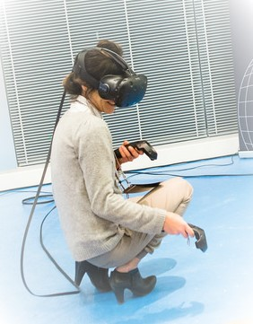
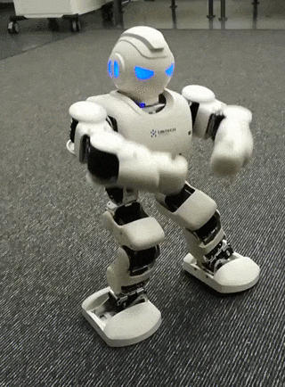

Hyvinvointikioski Voluntary jobs
So, I've been helping out our teacher with his project work at JAMK Hyvinvointikoski for unemployeed a few times. Well, twice for that and once for promoting JAMK, if being precise. Two of those time were with Oculus Rift virtual reality experience, and one time was with this dancing robot named Alpha that I made do different dance moves with ipad. They fascinated many.
The first time was in JAMK campus. I was using the laptop with Oculus Rift to have people try and play for example a flying car game in virtual reality. There was also some boxing and table tennis that seemed to get some interest as well. We were in this big room that had HTC Vive installed in, and my teacher was offering plank experiences on that with more beefy PC. They had a real plank in there and people had to walk on a plank from top of a skyscraper. There were lot of yelling and screaming, that I can tell you. Virtual Reality games are something different, you don't have the words to tell anyone about it so that they could understand how it is like, they just have to experience that themselves.
This happening drew in quite the amount of people to test out virtual reality experiences. There were also other stuff to do. For example they had quizzes about health and nutrition with kazoo, and body health measuring with this big machine that measured bone, muscle and fat percents in your body with electric current. Cannot remember it's name though.
Second time I hosted Oculus games with my classmate at our campus during showing of my field of study for possible future students. We had the Plank Experience that time. Plank on the ground to make it feel more realistic of course! Whole day we made people walk the plank with them freezing in place when the elevator doors opened and revealed short plank high above ground for them to walk on. Tested the game in lenght myself. It was pleasing experience, you almost feel like you are really in there, and the small tingling in your stomach when you step off of the plank and it seems like you are falling rapidly towards the ground. If I had the money I'd buy Oculus Rift for myself too. Oh the immersion on that!
Last time I was in Hyvinvointikioski's staff with my classmate was in University campus. We had this relatively small, angry looking robot named Alpha, or Alpha DAD as it was called, made by UBTECH from China. It had the ability to dance, do pushups and play music. The idea was to show off it's capability to lead a training program for example in yoga. It was used with ipad that had application for it. There was some demos, and other ready made movements. You could move the robot with simple buttons for directions and turning, and download more moves from the internet database. It has quite high price tag on it though, about 600 dollars plus shipping makes it cost something around 750 dollars. Still a lot for small robot I'd say. Maybe in the future we will have them for few bucks when they find the means to maybe make them from cheaper materials.
I am glad that I agreed to help in these happenings, since it was fun and I got new experiences out of them. I wish I'll be asked again to help, I'd be happy to.